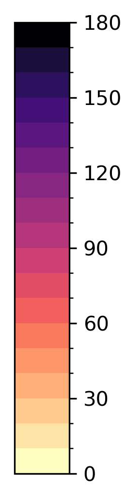
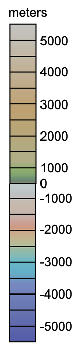

Zoom to: Western Aleutian Islands, Eastern Aleutian Islands, Pacific Northwest, Western US, Central America West, South America West, Mid Atlantic, North Atlantic, Sandwich Islands, Equatorial Atlantic, East African Rift, Central Indian Ocean, Himalayas, Indonesia, Japan, Mariana Islands, Kuril Islands
Earthquake
Volcano
Plate Boundary
Seafloor Age
Millions of Years

Bathymetry & Topography

© 2026 Rutgers University OOI Ocean Data Labs Project